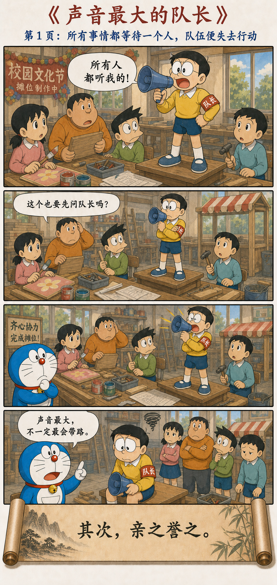
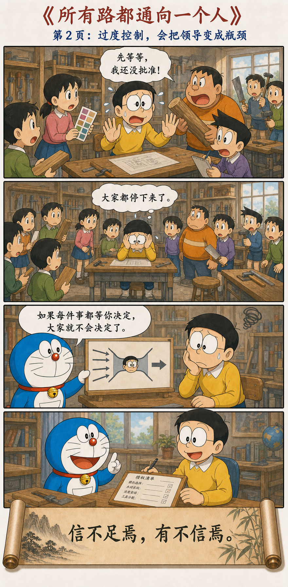
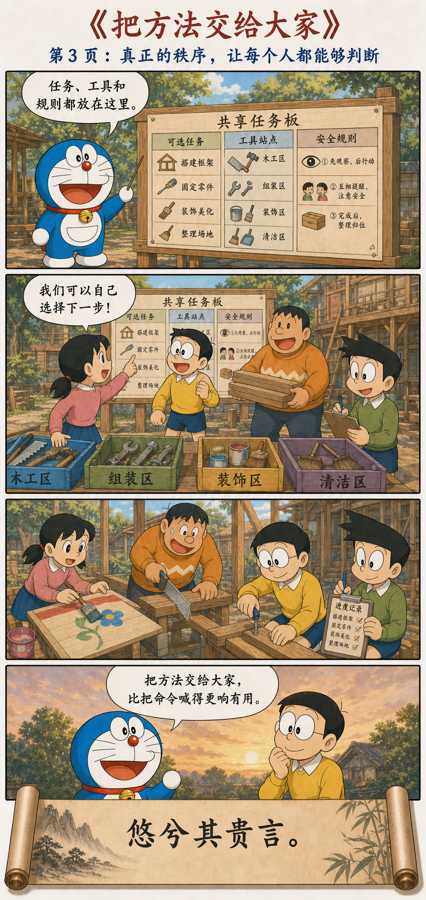
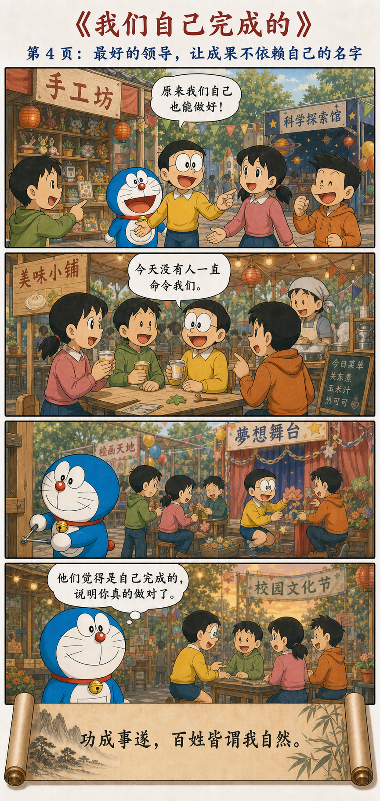

太上，下知有之
太上，下知有之；其次，亲而誉之；其次，畏之；其次，侮之。信不足焉，有不信焉。悠兮其贵言。功成事遂，百姓皆谓我自然。
领导的层次，体现在人们如何行动
最好的领导，人们只知道他存在；次一等的，人们亲近并赞美他；再次一等的，人们害怕他；最差的，人们轻侮他。领导者本身缺乏信用，下面自然不会相信。
高明的领导慎重发言，不用命令占满整个过程。等到事情做成、目标实现，大家都说：“这是我们自己做到的，本来就是这样。”
从最大的声音，到最少的存在感




被赞美，不一定是最好的领导
“亲而誉之”已经是不错的状态，却仍不是最高层。一个团队如果离不开对领导者的崇拜，每次遇到问题都先寻找那个最聪明的人，它的能力仍然集中在个人身上。领导一离开，判断也随之消失。
“下知有之”并不是成员不知道谁负责，而是领导者不必把自己的存在压在每个动作上。方向、边界和支持都在，成员却不用时时抬头确认领导的表情。
事事请示，看起来有秩序，实际上不能行动
颜色要批准、木料要批准、进度要批准，最后所有人都在排队等大雄。过度控制最讽刺的地方是：它以避免错误为名，却制造了更大的延误，也让成员逐渐丧失独立判断。
一旦领导成为唯一可信的节点，团队便会学会把责任向上推。表面上每个人都服从，实际上没有人真正承担结果。这就是“信不足焉，有不信焉”：不能信任别人，最终也无法获得别人的真实信任。
少说不是沉默，而是把话放在最有用的位置
哆啦A梦做的不是退出，而是把口头命令变成共享任务板、工具站和简单规则。说得少，是因为结构已经替他持续提供信息，不需要靠扩音器维持秩序。
“自然完成”不等于领导者什么都没做
看不见抢功，不等于看不见劳动。有人要设计结构、补足资源、处理成员无法承担的风险，也要在最后拧紧那颗松动的螺丝。无为领导减少的是不必要的干预，不是责任。
如果目标不清、资源缺失、冲突无人处理，领导却说“让大家自然发挥”，那只是把管理成本转嫁给团队。真正的低存在感，建立在高质量的准备与可信的支持上。
把“我来决定”改成“你据什么判断”
带学生、做产品、管理项目时，可以少回答几个具体选择，多提供判断标准：什么结果才算完成？哪些风险不能碰？信息在哪里？遇到超出边界的问题找谁？
当团队开始自己发现问题、协调资源并修正错误，领导者的名字会在过程里变淡，组织的能力却会变厚。
功劳变小了，能力留下来
第十七章把领导的最高成就放在一个很反直觉的位置：不是人人都赞美你，而是事情完成以后，人人都相信自己有能力完成。领导不再是团队唯一的发动机，而成为让许多发动机能够运转的条件。
把方法留下，把功劳放下。